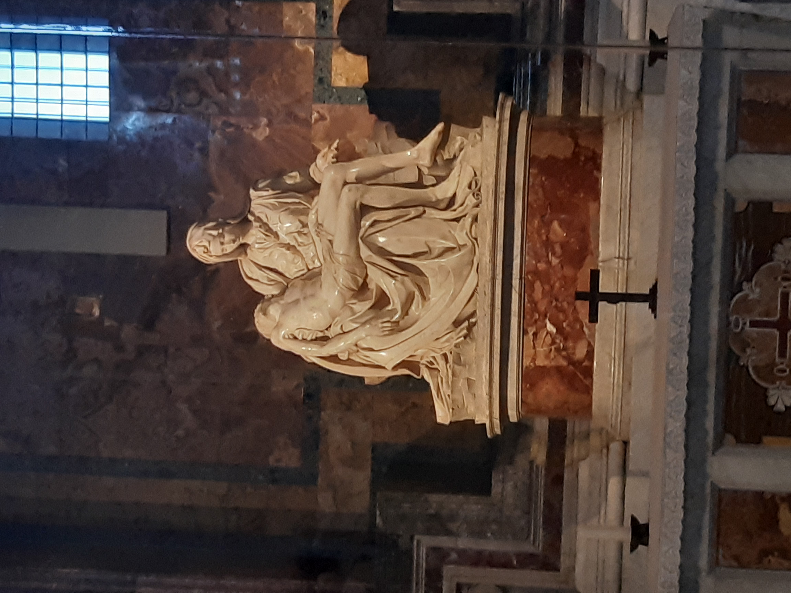

La Basilica di San Pietro ha una storia che inizia nel lontano 319, quando la sua costruzione ebbe inizio. Dopo quasi 1200 anni, iniziò la sua ricostruzione, che le consegnò l'aspetto che oggi tutti conosciamo (immagine a destra). Alla sua costruzione hanno lavorato, nel corso degli anni, famosissimi architetti e artisti del passato, tra i quali i più conosciuti sono sicuramente Michelangelo Buonarroti e Gian Lorenzo Bernini. A quest'ultimo, poi, dobbiamo render grazie della maestosa piazza di fronte alla basilica, che con la sua forma circolare sembra proprio "abbracciare" il fedele.
Simbolo del cattolicesimo, la basilica non ha effettivamente bisogno di presentazioni: milioni di turisti, oggi, vanno ad ammirarne la bellezza, sia esterna che interna. All'interno dell'edificio, infatti, troviamo una ricchezza e vastità di opere senza eguali; l'opera più famosa e conosciuta è sicuramente la Pietà di Michelangelo (immagine a sinistra), costruita nel 1498-99 e presente nella navata destra della basilica. Altra opera di grande importanza è il baldacchino costruito da Bernini e Borromini tra il 1624 e il 1633, presente verso la parte finale della navata centrale.
La visita alla basilica può continuare nei musei vaticani, terminanti con la Cappella Sistina, un capolavoro, ancora una volta, di Michelangelo Buonarroti, dove spicca, tra le diverse scene, quella del Giudizio Universale.
Se si è a Roma, San Pietro è una tappa quasi obbligatoria, non si può non capitarci. La meraviglia e lo stupore che regala agli occhi è impagabile, e pochi sono i monumenti e i siti storici che arrivano al suo livello di grandezza. Se si pensa anche che tutto ciò è gratuito, non si allora alcuna più scusa. L'unico versamento, non obbligatorio, è se si desidera andare sulla cupola: per prendere l'ascensore sono necessari circa 8 euro.
TORNA ALLA PAGINA PRINCIPALE